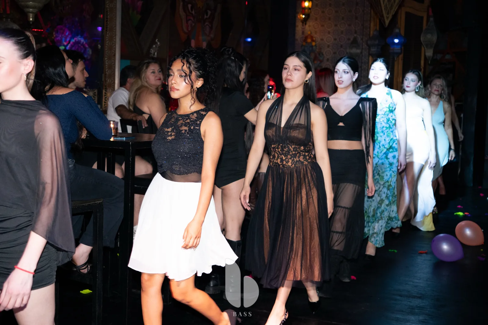
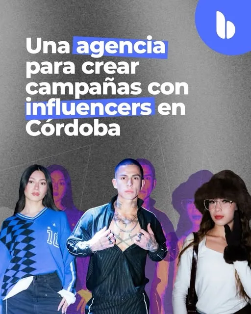
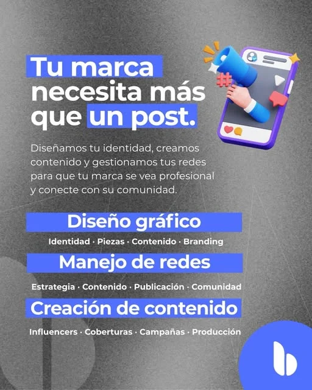

IDEAS QUE CONECTAN CON PERSONAS.Tu marca.En otrafrecuencia.
Creatividad, estrategia y producción audiovisual.
De la primera idea al contenido que se ve.
BASS EN ACCIÓNCH. 01 / PERSONAS
VER CON SONIDO
HISTORIAS EN PRIMERA PERSONA.
NO SOLO SE MIRA.Sintonizá BASS Elegí un canal. Descubrí lo que hacemos.
EXPLORÁ EL UNIVERSO BASS ↓IDEAS PROPIAS. PERSONAS REALES.
AGENCIA BASS / PORTFOLIO 2026MÉTRICAS / PORTFOLIO BASS
01 / SELECCIÓN DE TRABAJOSEl universo BASS ↗
Menos scroll.
Más miradas.
Eventos, activaciones y contenido.
Ideas que salen de una pantalla
para encontrarse con personas.

OTRAS MIRADAS / EN VIVOEl desfile, desde adentro.
EVENTOS / FOTOGRAFÍAEl encuentro, las personas y lo que pasa entre una escena y la siguiente. Una mirada al desfile desde adentro.
EN FOCO / FASHION NIGHT · WE COLORSACTIVACIÓN + REELS + DISEÑO
GANESHA / FASHION NIGHTFashion
Fashion
Night.
La experiencia empieza
antes del evento.
Una invitación en la calle, una convocatoria solidaria y piezas para redes. Distintos formatos de Fashion Night · We Colors publicados por BASS.
01 / ACTIVAR02 / CONVOCAR03 / COMUNICAR
Explorar la campaña en Instagram ↗UNA IDEA. DISTINTAS FORMAS DE VIVIRLA.EL UNIVERSO BASS / 01
03 / ESTRATEGIA & CREADORAS.IDEAS / PERSONAS / FORMATOS

04 / COMUNICACIÓN PROPIADISEÑO PARA REDES

CAMPAÑAS CON INFLUENCERS ↗También
se reconoce
sin decirlo.
Tipografía, color y mensaje en dos piezas de comunicación de la agencia. Muestras reales de su contenido para redes.
Explorá el perfil de BASS ↗
CONTENIDO & SERVICIOS ↗02 / QUÉ HACEMOSCREATIVIDAD A MEDIDA
De la idea
a lo real.
Contenido, comunicación y producción.
Armamos la propuesta según tu marca.
01Diseño & brandingIdentidad visual y piezas digitales
+
Identidad visual, piezas publicitarias, adaptaciones para redes y papelería digital. Un concepto sólido para que tu marca tenga una voz visual propia.
Hablemos de tu identidad ↗02Estrategia & redesPlanificación, contenido y comunidad
+
Estrategia de contenido, grilla mensual, community management y analítica. De la planificación a la publicación, con una dirección clara.
Pensemos tus redes ↗03Contenido & UGCReels, TikToks y creadoras
+
Reels, TikToks y contenido con creadores alineados a la estética de tu marca. Personas, ideas y formatos para conectar con tu comunidad.
Creemos tu contenido ↗04Coberturas en vivoFotografía, video y edición express
+
Captura audiovisual para eventos, lanzamientos y festivales. Fotos, videos y edición express para que la experiencia también suceda en las redes.
Contanos de tu evento ↗05Activaciones & staffPromotoras, acreditaciones y equipo
+
Promotoras y personal para activaciones de marca, acreditaciones y acciones BTL. Coordinación del equipo para cada jornada o campaña.
Armemos tu activación ↗CONTENIDO CON IDENTIDAD.ESTRATEGIA CON DIRECCIÓN.
No llenamos
el feed.Le damos voz.
Una marca tiene mucho para decir.
Encontramos cómo contarlo.
03 / CÓMO TRABAJAMOSDE LA PRIMERA IDEA A LA PUBLICACIÓN
Buen contenido.
Con dirección.
Una propuesta que se adapta
a lo que necesita tu marca.
Primero, tu marca.
El punto de partida es lo que querés comunicar, a quién y para qué.
Después, la idea.
Estrategia, concepto y formatos para darle forma al contenido.
Ahora, que pase.
Diseño, producción y contenido para llevar la propuesta a las redes o al evento.
DISTINTAS FORMAS DE SUMARNOS.Vos ponés
Vos ponés
el ritmo.
LA PRÓXIMA IDEA PODRÍA SER LA TUYA.CÓRDOBA ↗